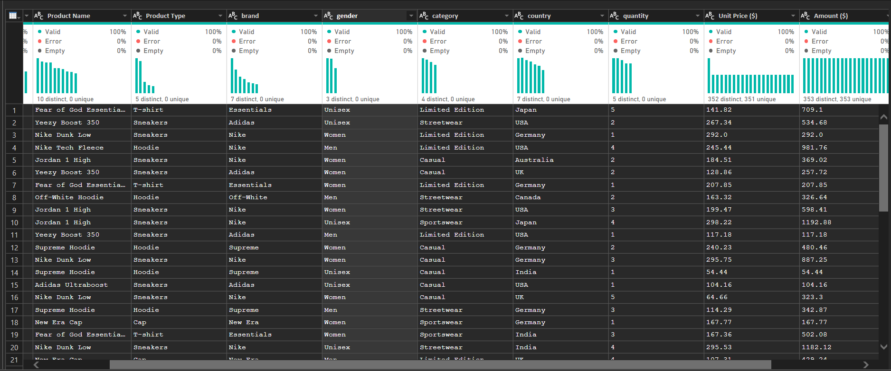

DATA PROCESSING#
Analisis Data Menggunakan POWER BI#

Koneksi Ke Database#
import os
import pandas as pd
from dotenv import load_dotenv
from sqlalchemy import create_engine
from pyod.models.abod import ABO
---------------------------------------------------------------------------
ImportError Traceback (most recent call last)
Cell In[1], line 5
3 from dotenv import load_dotenv
4 from sqlalchemy import create_engine
----> 5 from pyod.models.abod import ABO
ImportError: cannot import name 'ABO' from 'pyod.models.abod' (D:\Perkuliahan\Semester 5\Poyek Sains Data\PSD-2\venv_py3.11\Lib\site-packages\pyod\models\abod.py)
load_dotenv()
# Ambil variabel dari .env
user_postgres = os.getenv("USER_POSTGRES")
password_postgres = os.getenv("PASS_POSTGRES")
host_postgres = os.getenv("HOST_POSTGRES")
port_postgres = os.getenv("PORT_POSTGRES")
db_postgres = os.getenv("DB_POSTGRES")
user_mysql = os.getenv("USER_MYSQL")
password_mysql = os.getenv("PASS_MYSQL")
host_mysql = os.getenv("HOST_MYSQL")
port_mysql = os.getenv("PORT_MYSQL")
db_mysql = os.getenv("DB_MYSQL")
postgres_conn = f"postgresql+psycopg2://{user_postgres}:{password_postgres}@{host_postgres}:{port_postgres}/{db_postgres}"
mysql_conn = f"mysql+pymysql://{user_mysql}:{password_mysql}@{host_mysql}:{port_mysql}/{db_mysql}"
postgres_engine = create_engine(postgres_conn)
postgres_engine = create_engine(mysql_conn)
python-dotenv could not parse statement starting at line 13
python-dotenv could not parse statement starting at line 17
mysql_df_iris = pd.read_sql("SELECT * FROM iris_no_class", mysql_conn)
postgres_df_iris = pd.read_sql("SELECT * FROM iris_no_class", postgres_conn)
# mengabungkan 2 database
merge_df = pd.merge(mysql_df_iris, postgres_df_iris, left_on="id", right_on='id', how='outer')
print(merge_df)
id sepal_length sepal_width petal_length petal_width
0 1 5.1 3.5 1.4 0.2
1 2 4.9 3.0 1.4 0.2
2 3 4.7 3.2 1.3 0.2
3 4 4.6 3.1 1.5 0.2
4 5 5.0 3.6 1.4 0.2
.. ... ... ... ... ...
145 146 6.7 3.0 5.2 2.3
146 147 6.3 2.5 5.0 1.9
147 148 6.5 3.0 5.2 2.0
148 149 6.2 3.4 5.4 2.3
149 150 5.9 3.0 5.1 1.8
[150 rows x 5 columns]
table_iris = merge_df.copy()
Algoritma ABOD#
from pycaret.anomaly import *
# Setup PyCaret untuk anomaly detection
exp_ano = setup(data=table_iris)
# Buat model ABOD
abod_model = create_model('abod')
# Assign label outlier ke setiap baris
df_abod_ = assign_model(abod_model)
# # Hapus baris yang dianggap outlier
# dataset_clean = dataset_outliers[dataset_outliers['Anomaly'] == 1]
# dataset_clean
# Model ABOD
abod = ABOD()
abod.fit(table_iris)
# Prediksi: 0 = normal, 1 = outlier
labels = abod.predict(table_iris)
# Skor outlier
scores = abod.decision_scores_
# Gabungkan ke DataFrame
df_result = table_iris.copy()
df_result["Anomaly"] = labels
df_result["Anomaly_Score"] = scores
print(df_result.head())
Algoritma KNN#
from pycaret.anomaly import *
# Setup PyCaret untuk anomaly detection
exp_ano = setup(data=table_iris)
# Buat model ABOD
knn_model = create_model('knn')
# Assign label outlier ke setiap baris
dataset_outliers_knn = assign_model(knn_model)
# # Hapus baris yang dianggap outlier
# dataset_clean = dataset_outliers_knn[dataset_outliers_knn['Anomaly'] == 1]
# dataset_clean
| Description | Value | |
|---|---|---|
| 0 | Session id | 7097 |
| 1 | Original data shape | (150, 5) |
| 2 | Transformed data shape | (150, 5) |
| 3 | Numeric features | 5 |
| 4 | Preprocess | True |
| 5 | Imputation type | simple |
| 6 | Numeric imputation | mean |
| 7 | Categorical imputation | mode |
| 8 | CPU Jobs | -1 |
| 9 | Use GPU | False |
| 10 | Log Experiment | False |
| 11 | Experiment Name | anomaly-default-name |
| 12 | USI | ea65 |
Algoritma LOF#
from pycaret.anomaly import *
# Setup PyCaret untuk anomaly detection
exp_ano = setup(data=table_iris)
# Buat model ABOD
lof_model = create_model('lof')
# Assign label outlier ke setiap baris
dataset_outliers_lof = assign_model(lof_model)
# Hapus baris yang dianggap outlier
# dataset_clean = dataset_outliers_lof[dataset_outliers_lof['Anomaly'] == 1]
| Description | Value | |
|---|---|---|
| 0 | Session id | 7325 |
| 1 | Original data shape | (150, 5) |
| 2 | Transformed data shape | (150, 5) |
| 3 | Numeric features | 5 |
| 4 | Preprocess | True |
| 5 | Imputation type | simple |
| 6 | Numeric imputation | mean |
| 7 | Categorical imputation | mode |
| 8 | CPU Jobs | -1 |
| 9 | Use GPU | False |
| 10 | Log Experiment | False |
| 11 | Experiment Name | anomaly-default-name |
| 12 | USI | f424 |
df_sorted_knn = dataset_outliers_knn.sort_values(by="Anomaly_Score", ascending=False).reset_index(drop=True)
print('Top 5 Deteksi Anomali berdasarkan (knn)')
df_sorted_knn.head()
Top 5 Deteksi Anomali berdasarkan (knn)
| id | sepal_length | sepal_width | petal_length | petal_width | Anomaly | Anomaly_Score | |
|---|---|---|---|---|---|---|---|
| 0 | 150 | 5.9 | 3.0 | 5.1 | 1.8 | 1 | 5.155579 |
| 1 | 1 | 5.1 | 3.5 | 1.4 | 0.2 | 1 | 5.037857 |
| 2 | 51 | 7.0 | 3.2 | 4.7 | 1.4 | 1 | 4.164132 |
| 3 | 50 | 5.0 | 3.3 | 1.4 | 0.2 | 1 | 4.155719 |
| 4 | 2 | 4.9 | 3.0 | 1.4 | 0.2 | 1 | 4.146083 |
df_sorted_lof = dataset_outliers_lof.sort_values(by="Anomaly_Score", ascending=False).reset_index(drop=True)
print('Top 5 Deteksi Anomali berdasarkan (knn)')
df_sorted_lof.head()
Top 5 Deteksi Anomali berdasarkan (knn)
| id | sepal_length | sepal_width | petal_length | petal_width | Anomaly | Anomaly_Score | |
|---|---|---|---|---|---|---|---|
| 0 | 1 | 5.1 | 3.5 | 1.4 | 0.2 | 1 | 1.256153 |
| 1 | 150 | 5.9 | 3.0 | 5.1 | 1.8 | 1 | 1.253521 |
| 2 | 2 | 4.9 | 3.0 | 1.4 | 0.2 | 1 | 1.217657 |
| 3 | 149 | 6.2 | 3.4 | 5.4 | 2.3 | 1 | 1.214298 |
| 4 | 3 | 4.7 | 3.2 | 1.3 | 0.2 | 1 | 1.183005 |
Menghapus 2 Data Outliers Teratas#
Algoritma KNN#
df_knn_clean = df_sorted_knn.iloc[2:].reset_index(drop=True)
df_knn_clean = df_knn_clean.sort_values(by="id").reset_index(drop=True)
print(f"total data iris setelah dihapus: {len(df_knn_clean)}")
total data iris setelah dihapus: 148
Algoritma LOF#
df_lof_clean = df_sorted_lof.iloc[2:].reset_index(drop=True)
df_lof_clean = df_lof_clean.sort_values(by="id").reset_index(drop=True)
print(f"total data iris setelah dihapus: {len(df_lof_clean)}")
total data iris setelah dihapus: 148